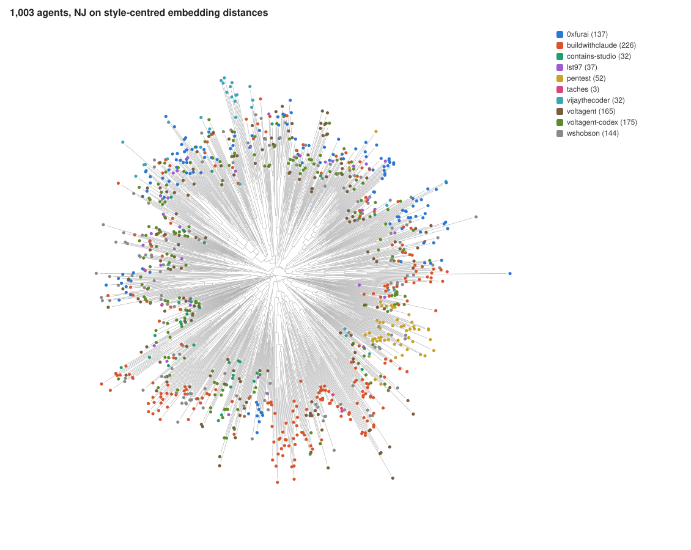
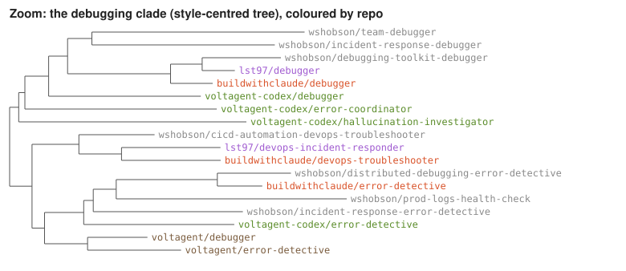

phailogeny
Comparative phylogenetics for AI agents: a similarity tree of 1,003 public agent definitions from 10 GitHub repos, with methods for separating copying from convergence.


Comparative phylogenetics for AI agents: a similarity tree of 1,003 public agent definitions from 10 GitHub repos, with methods for separating copying from convergence.

